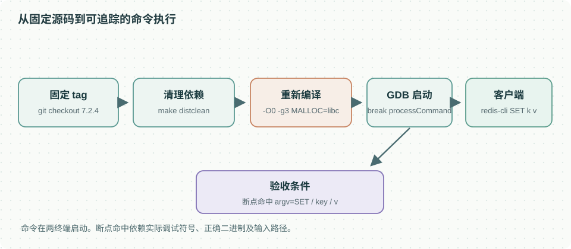
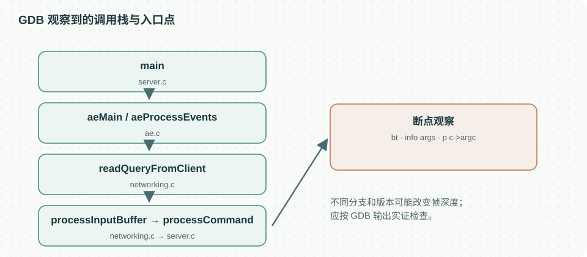

Chapter 02 / Redis Source Anatomy
从源码构建到 GDB：建立可信调试环境
固定 Redis 7.2.4，区分二进制、调试符号与源文件，让每一个断点都能解释真实执行路径。
为什么“能运行”不等于“能调试”？
发行版安装的 Redis 可以正常服务，却未必包含与源码精确匹配的 DWARF 调试信息。编译优化可能内联函数、重排变量，导致 GDB 在断点处显示 <optimized out>。如果运行进程与手头 checkout 的源码不同，单步跟踪还会跳到完全错误的行。
本章把“可靠源码调试”定义为四件事的交集：源码是同一个 tag；二进制来自该源码；有可读调试符号；断点发生在预期的命令请求上。只做到其中两件，通常不足以解释复杂问题。
main 或 unstable。Redis 8 的构建系统有不同的依赖；不要用最新 README 反推 7.2 的依赖要求。构建流水线：固定版本、清理、编译、确认

在 Linux / macOS 上安装 C 编译器和 GNU make，若计划运行官方 Tcl 测试还需 Tcl。开发时使用临时目录，不要复用线上数据路径。以下示例选择 MALLOC=libc 以减少 allocator 调试依赖，和生产默认配置不同。
git clone https://github.com/redis/redis.git
cd redis
git checkout 7.2.4
git describe --tags --exact-match
make distclean
make -j2 MALLOC=libc REDIS_CFLAGS="-O0 -g3" REDIS_LDFLAGS="-g3"
./src/redis-server --version
# Linux 上进一步确认调试信息（macOS 可使用 dwarfdump）
readelf -S ./src/redis-server | grep .debug_infogit describe 应确认当前 tag，版本命令显示 Redis 7.2.4。make distclean 很重要：Redis 7.2 的依赖树和构建选项可能缓存旧配置。实际优化等级还要以编译日志或反汇编核验；不是只看一次 make 命令就宣称所有文件处于 O0。
双终端调试：断在 processCommand
终端 A 中用 GDB 启动实例，而不是 attach 到生产进程。该实例使用独立端口、禁用持久化，并在 localhost 接收命令。终端 B 发一条 SET 请求。若 GDB 没有命中，先检查当前是否是预期二进制、断点函数是否存在、端口是否冲突。
# 终端 A
gdb --args ./src/redis-server --bind 127.0.0.1 --port 6390 --save "" --appendonly no
(gdb) break processCommand
(gdb) run
# 终端 B
./src/redis-cli -p 6390 SET demo:trace hello
# 断点停住后，终端 A
(gdb) bt
(gdb) info args
(gdb) p c->argc
(gdb) p (char*)c->argv[0]->ptr
(gdb) continuec->argv[0] 是命令名对象；实际类型和编码可用 GDB 展开检查。命令执行函数中的局部变量、优化和宏会影响可见性。按原样使用单步输出时，记录操作系统、编译器、命令和 git tag 才具备复现价值。
交互用于追踪概念路径，不替代对实际二进制文件的单步验证。
第二张图：真实调用栈怎么读？

GDB 的 bt 显示的是“此刻谁调用了谁”，不是 Redis 全部请求的永恒固定路径。aeMain 循环驱动文件事件；可读回调读取数据；解析完备后进入命令执行。查不到期望栈帧时，先看线程是否进入读事件，或命令是否在协议阶段就被拒绝。
| 指令 | 回答的问题 | 常见误区 |
|---|---|---|
bt / frame N | 当前调用路径与上层调用者 | 帧被优化内联后还会保留相同层数 |
info args | 函数参数是什么 | 所有参数在 O2 下仍可打印 |
p c->argc | 解析了几个参数 | 把 argc 当网络字节数 |
next / step | 跳过调用与进入调用的差异 | 在没有源码符号的库里期待逐行单步 |
测试与故障隔离：先复现，再优化
make test
# 只跑感兴趣的 Tcl suite（具体名称以 tests/unit/ 为准）
./runtest --single unit/type/string
# 退出实验实例
./src/redis-cli -p 6390 SHUTDOWN NOSAVEmake test 会启动大量临时实例，要求系统能开启本地端口并具备 Tcl 工具链，不应在生产机上运行。测试失败要先分辨环境限制（端口、资源、文件权限）和被测实现缺陷。只通过一次基础测试不意味着覆盖了多线程、故障恢复、AOF 或集群路径。
复现报告至少写清：tag/commit、平台、编译选项、服务端参数、触发命令、期望行为与实际输出。调试命令的价值来自这种可重复性，而不是 GDB 截图。
版本边界：为什么我们不跟踪 unstable
Redis 7.2.4 的 src/Makefile、内存分配器和命令流程与后续版本有持续演进。固定 tag 允许你同时核对源文件、行号与实际运行行为。Redis 7.2 源代码遵循 BSD-3-Clause；7.4 和 Redis 8 的许可与产品打包方式不同，这也是把版本标记写进每篇文章的原因。
下一章将用 zmalloc.c 具体展示：同样叫 zmalloc 的接口为什么会因为编译宏和分配器能力而使用完全不同的内存统计布局。
源码与参考
下列实现均指向 Redis 7.2.4 的固定源码标签；命令与内存行为必须以所运行的实际版本和配置为准。